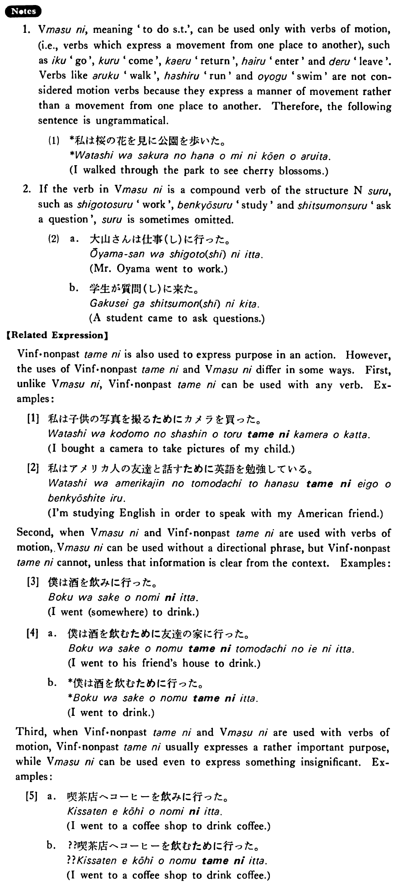

に (5) (B. 297)
- (ks).
- 私はデパートへ贈り物を買いに行った・行きました。
- I went to a department store to buy a gift
- (a).
- 学生が質問をしに来た。
- A student came to ask questions.
- (b).
- そこへ何をしに行くんですか。
- To do what are you going there? / For what are you going there?
- (c).
- 村井さんは昼ご飯を食べにうちへ帰った。
- Mr. Murai went home to eat his lunch.
